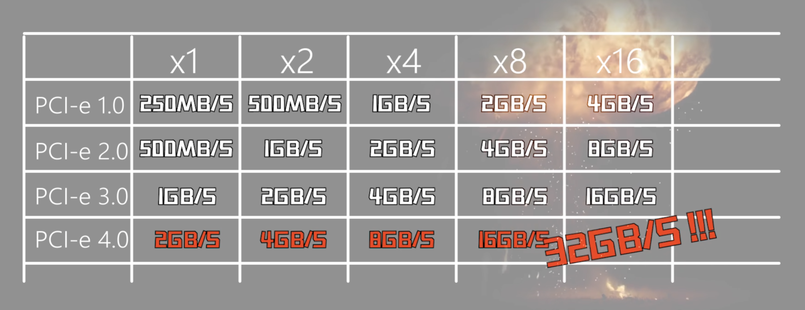
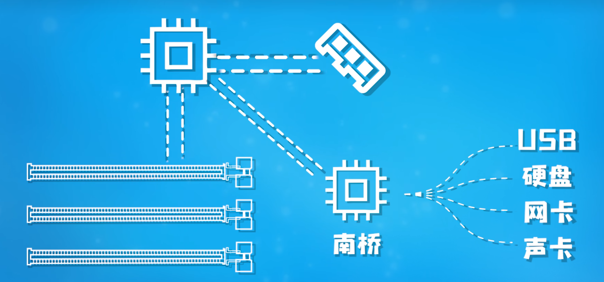

# 频率
CPU 主频 = 外频 倍频
- 外频：为了能顺利通信、协调工作，电脑里所有的电气信号必须要保证频率协调统一；就像跳大绳一样，需要一个人来喊口号，这个人就是主板晶振（Crystal Osciallator），XO；主板上其他元器件和这个基础频率统一，这就是外频
- 倍频：CPU 变牛逼了，但是其他设备跟不上；于是在保证和其他设备通讯的 100Mhz 外频不变的情况下，我们让 CPU 自己工作的时候的频率在这基础上翻倍，
于是，CPU 和其他小弟协调工作的时候会用 100Mhz 的外频与他们同步，然后转过身自己干活的时候会发挥全力，用 42 倍的基础频率来全力运算
超频最好只调倍频
内存外频异步工作：为了提高性能，工程师发现，可以让内存的外频比 CPU 基础频率高 33.33 无穷的频率来运行，也就是让内存的外频工作在 133.33 频率下
显卡的核心频率和外频没有关系，因为显卡直接通过 PCIe 和 CPU 通信； 显存同理
# 总线
早年老设备并行传输。传输前、传输时、传输后都要排队好；此外相邻链路会出现干扰，因此速度受限
USB：通用串行总线（Universal Serial Bus）
SATA，PCIe 都是串行；PCIe 是串行多链路传输，每根链路数据独立，相互无关（并行的所有链路数据同步）
# PCIe
ISA 总线统一各个设备接口，但是带宽慢，要手动配置，依赖特定 CPU 等弊端
PCI 总线速度快了，即插即用不需要手动配置资源，不依赖特定 CPU；但是依然并行，共享总线导致不同设备抢带宽，不支持热拔插
于是 PCIe 出现，PCIe 有两种存在形式 —— 接口（长槽，显卡槽）和通道（M.2 固态硬盘接口）
PCIe 总线的带宽根据插口长度分配，从 X1 倍增到 x16

# 南桥芯片
PCIE 的高速也源于它直接接通在 CPU 的 PCIe 控制器上

内存过于重要，CPU 直接与内存对接
# 磁盘数据
FAT 表：用来描述文件系统内存储单元的分配状态，以及文件内容前后链接关系的表格
- 机械硬盘只删 FAT，非必要（存入新数据）不会进行覆写，找回相对简单
- 固态硬盘除了删除 FAT，想要写入新数据必须保证那一块是空的（先擦除再写入），所以当硬盘空闲时，就会进行 trim 回收指令（系统默默擦除）